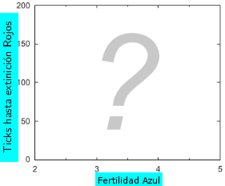
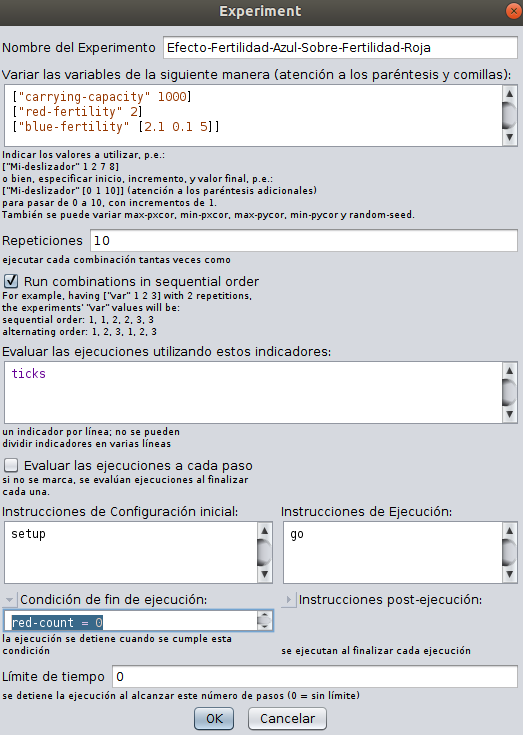
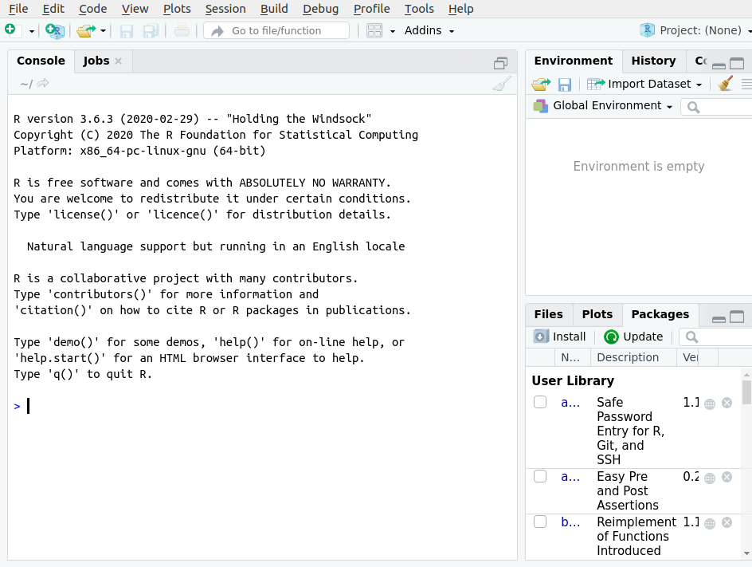
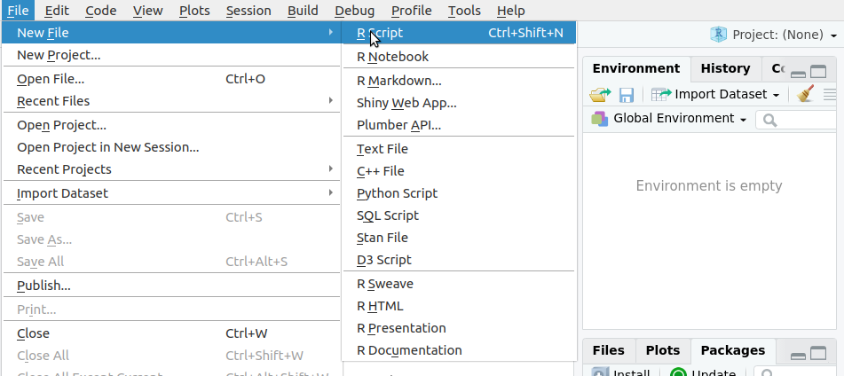
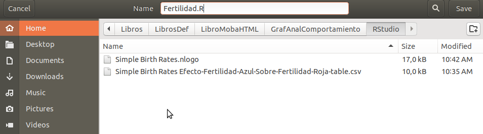
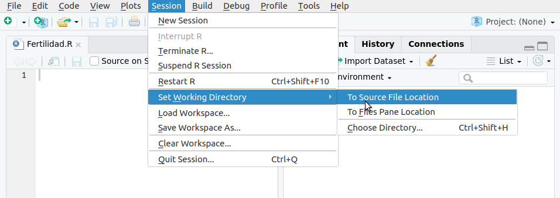
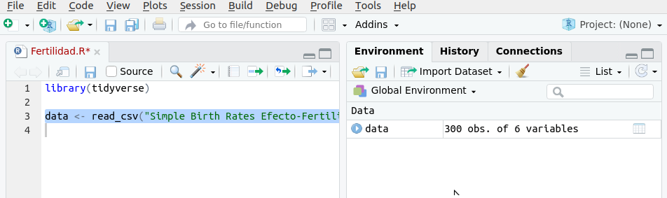
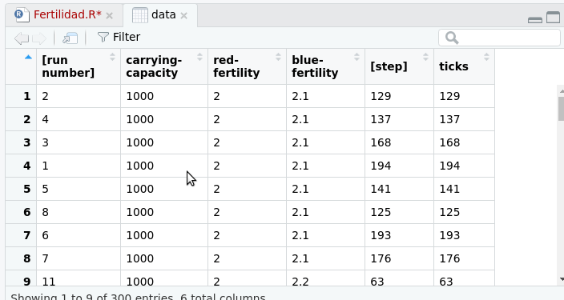
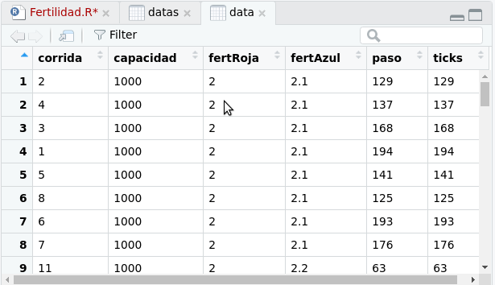
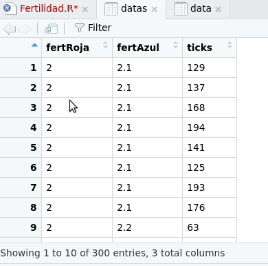

A Generación de Datos con NetLogo`
A.1 Un Ejemplo Ilustrativo
La categoría Biología de la Biblioteca de modelos de NetLogo incluye un modelo llamado “Simple Birth Rates”. Es un modelo muy simple, diseñado para simular cómo la diferencia en las tasas de natalidad entre dos especies coexistentes (tortugas rojas y azules) afectan el número de individuos en cada población . Las dos especies difieren solo en el número de descendientes que cada individuo produce cada hora de caminar; la probabilidad de muerte es la misma para ambas especies y se ajusta para que el total el número de individuos es aproximadamente constante. (Si estudia negocios, piense en ellos como dos cadenas de restaurantes de comida rápida que cierran al mismo ritmo pero difieren en la frecuencia con la que abren nuevas tiendas.) Abra este modelo, lea su pestaña Información y juegue un poco con él.
Centrémonos en una cuestión que este modelo puede abordar:
- ¿Cómo el tiempo hasta la exticnción de una espacie depende de la tasa de natalidad relativa de las dos especies?
Si mantenemos al tasa de nacimiento de la especie roja constante en 2.0 y variamos la fertilidad azul de 2.1 a 5.0, ¿cómo cambia el número de ticks hasta la extinción de la especie roja?En otras palabras,
- ¿qué forma esperamos que tenga la siguiente gráfica ?

Este modelo incluye un botón y un procedimiento llamado run-experimenter" diseñado para ayudar a resolver este problema: ejecuta el modelo hasta que una especie se extingue, nos dice cuánto tiempo tomó y luego comienza otra ejecución. Si pensamos en este problema por un minuto, podemos formarnos una expectativa bastante fuerte dela respuesta. Cuando las tasas de natalidad de las dos especies son cercanas, deberían coexistir durante mucho tiempo.A medida que aumenta la diferencia en las tasas de natalidad, el tiempo hasta la extinción del rojo debería disminuir rápidamente. Pero no importa qué tan rápido se reproduzca el azul, parece poco probable que los rojos se extingan inmediatamente (el modelo se inicializa con 500 de ellos), Por lo tanto, esperamos que la curva de la figura sea alta cuando la fertilidad azul es 2.1, cae rápidamente, luego se aplana a un valor superior a 1 a medida que aumenta la fertiolidad azul.
- ¿Son correctas estas expectativas?
Para averiguarlo, necesitamos hacer un experimento de simulación.
A.2 Experimentos de Simulación (Analizador de Comportamiento)
Para ver cómo el tiempo de extinción de los agentes rojos en el modelo varía con el parámetro de fertilidad de los agentes azules, necesitamos ejecutar el modelo en una amplia gama de valores de fertilidad y registrar el tiempo (ticks) en el que el número de agentes rojos llega a cero. Pero hay una complicación: este modelo, como la mayoría de los MOBAs, es estocástico y produce resultados diferentes cada vez que lo ejecutamos porque las tortugas que mueren en cada tick se eligen al azar. Debido a que el modelo produce resultados diferentes en cada ejecución, para comprenderlo necesitamos calcular los resultados promedio y la variabilidad en torno a esos promedios. Los modeladores a menudo hacen esto de la misma manera que los científicos estudian sistemas reales que son muy variables: ejecutando experimentos que incluyen réplicas de varios escenarios diferentes (los estadísticos a menudo usan la palabra tratamiento , nosotros usamos escenario). En el modelado de simulación, un escenario se define mediante un modelo y un conjunto de parámetros, entradas y condiciones iniciales; si un modelo no tiene elementos estocásticos, produce exactamente los mismos resultados cada vez que ejecuta el mismo escenario. Las réplicas son ejecuciones de modelos en que solo cambian los elementos estocásticos del modelo. Para analizar cómo la fertilidad azul afecta el tiempo de extinción de las tortugas rojas, usaremos un experimento de simulación que varía la fertilidad azul de 2,1 a 5,0 en incrementos de 0,1, produciendo un total de 30 escenarios. Además, ejecutaremos 10 réplicas de cada escenario, la ejecución del modelo continuará hasta que no haya más agentes rojos y se producirá como resultado el tiempo (tick) en el que se produce esta extinción. Estos resultados se registrarán en un archivo que luego podamos importar a R para un análisis estadístico, finalmente,se debe calcular la media y la desviación estándar del tiempo hasta la extinción del rojo y graficar cómo varía la fertilidad del azul.
(Nota: Analizar los resultados en forma gráfica y calcular estadísticas es una parte esencial de modelado que no se puede hacer convenientemente en NetLogo, pór eso usaremos R y Rstudio para ralizar estos análisis).
Este es un ejemplo de un experimento de sensibilidad: un experimento de simulación en el que variamos un parámetro en una amplia gama de valores y luego se ve cómo responde el modelo a él, este diseño experimental es muy útil para comprender cómo un modelo y el sistema que representa, responde a un factor a la vez. Hacer un procedimiento en NetLogo para generar estos datos y que luego se escriban a un archivo tomaría mucho tiempo, y si deseamos hacer un análisis parecido a otro modelo tocaría volver a escribir un procedimiento, es por sto que NetLOgo tiene una herramienta muy útil llamada Analizador de Comportamiento (BehaviorSpace)que nos permite efectuar esots experimentos muy fácilmente. En este punto, debe leer la Guía del Analizador de Comportamiento. Puede pensar en el Analizador de Comportamiento (BehaviorSpace) como un programa separado, integrado en NetLogo, que ejecuta experimentos de simulación en su modelo y guarda los resultados en un archivo para que usted los analice. Completando un cuadro de diálogo simple, puede programarlo para realizar cualquiera o todas estas funciones:
- Crear escenarios cambiando el valor de las variables globales;
- Generer réplicas (llamadas repeticiones en NetLogo) de cada escenario;
- Recopilar los resultados de cada ejecución del modelo y escríbalos en un archivo;
- Determinar cuándo detener la ejecución de cada modelo, utilizando un límite de
tiempo (por ejemplo, detener después de 1000 ticks) o una condición lógica (por ejemplo, detenerse si el número de tortugas
rojas es cero); y - Ejecutar algunos comandos de NetLogo al final de cada ejecución del modelo.
La información que ingresa en el Analizador de Comportamiento para ejecutar experimentos se guarda como parte del archivo NetLogo del modelo. Por lo tanto, lo primero que debe hacer es guardar su propia copia de este modelo con un nombre único, y de esta manera usar su propia versiones del modelo en lugar de la de la Biblioteca de modelos.
A.2.1 Abra BehaviorSpace desde el menú Herramientas de NetLogo.
El cuadro de diálogo del Analizador de Comportamiento se abre y le permite crear nuevos experimentos, editar previamente guardados, o copiar o eliminar experimentos. Los términos experimento y configuración del experimento se refieren a un conjunto de instrucciones que definen los escenarios, réplicas, salidas y otras características que desee.Puede crear y guardar varias configuraciones de experimentos diferentes para el mismo modelo.Esto abrirá el cuadro de diálogo Experimento, que ahora completará modificando los valores predeterminados. A medida que completa el cuadro de diálogo Experimento, puede guardar su configuración haciendo clic en Aceptar en la parte inferior (para reanudar el trabajo en el cuadro de diálogo, vuelva a abrir el experimento haciendo clic en Editar en el cuadro de diálogo del Analizador de Comportamiento).
- Lo primero que debe hacer en el cuadro de diálogo del Experimento es darle al experimento un nuevo nombre. El nombre debe describir el experimento, por lo que debe ser algo como “Efecto-Fertilidad-Azul-Sobre-Fertilidad-Roja”.
- A continuación, puede especificar los escenarios a ejecutar completando el campo etiquetado “Variar las variables de la siguiente manera” Tenga en cuenta que NetLogo inserta automáticamente las variables globales que están definidas en los elementos de la interfaz, como deslizadores, interruptores y entradas. Desde el Documentación de BehaviorSpace (y el ejemplo proporcionado justo debajo del campo), Puede crear escenarios que varíen la fertilidad azul de 2.1 a 5.0 en incrementos de 0.1 ingresando:
["blue-fertility" [2.1 0.1 5.0]]
- En el campo “Variar las variables de la siguiente manera”, es una muy buena idea incluir las variables que desea mantener constantes, fijando sus valores para que no se modifiquen accidentalmente moviendo un control deslizante:
["red-fertility" 2]
["carrying-capacity" 1000]- Establezca el valor de “Repeticiones” en 10.
Ahora puede decirle a NetLogo qué resultados desea completando el campo etiquetado “Evaluar las ejecucuones usando estos indicadores”. En este campo, hay que colocar declaraciones de NetLogo que describan los resultados que queremso medir; estas declaraciones se ejecutarán y los resultados se escribirán en el archivo de salida. En este caso, el resultado que desea es el número de ticks en el que los agentes rojos se extinguen. Para hacer esto, puedes decirlae al Analizados de Comportamiento que pare el modelo cuando el número de agentes rojos sea cero y que generar el tick (tiempo) cuando esto sucede. El reportero que da el número de ticks es simplemente “ticks” as+i que:
- Coloque la palabra ticks en el cuadro “Evaluar las ejecucuones usando estos indicadores” y desmarque la casilla “Evaluar las ejecuciones a cada paso”
¿Cómo se le dice al Analizador de Comportamiento que detenga el modelo cuando los agentes rojos se extinguen? Se Necesita poner una condición en el campo “Condición de fin de ejecución” que sea verdadera cuando el modelo debe detenerse:
- Haga clic en el botón “Condición de fin de ejecución” y coloque la condición:
red_count=0

No es necesario cambiar nada más en el cuadro de diálogo del Experimento, pero asegúrese de entender el significado de los diferentes cuadros (ventanas) de la pantalla * Ahora haga clic en Aceptar para cerrar el cuadro de diálogo del esperimento, Cierre el cuadro de diálogo del Analizador de Comportamiento y Guarde el archivo. Ahora está listo para ejecutar el experimento.
- Abra el Analizador de Comportamiento nuevamente desde el menú Herramientas, seleccione su experimento y haga clic en “Ejecutar”.
Pruebe los formatos de salida de hoja de cálculo y tabla; cada uno de ellos produce archivos en formato .csv diseñados para ser importado en hojas de cálculo u otro software. También tiene la opción de cuántos de los procesadores de su computadora usar, si tiene varios procesadores. También puede anular la selección de las actualizaciones de Vista y gráficos y monitores para acelerar la ejecución.
A.2.2 Nota Importante
El Analizador de Comportamiento es una herramienta extremadamente importante, pero si no comprende exactamente cómo funciona, lo encontrará frustrante y puede malinterpretar sus resultados. Necesitaentender varios detalles:
- Al comienzo de cada ejecución, El Analizador de Comportamiento cambia los valores de las variables como se especifica en su caja “Variar las variables de la siguiente manera..” El Analizador de Comportamiento establece estos valores antes de ejecutar el prcedimiento setup. Por lo tanto, si el setup establece el valor de una variable que se supone que El Analizador de Comportamiento va a controlar., el valor dado por El Analizador de Comportamiento será sobrescrito por el valor establecido en el setup. Además, el setup generalmente comienza con el comando clear-all, que establece el valor de todos las variables en cero, excepto las variables globales que se definen en un deslizador, selector, interruptor o entrada en la interfaz. En consecuencia, cualquier variable que desee que El Analizador de Comportamiento controle debe ser definido e inicializado solo por uno de estos elementos de interfaz.
Cuando la casilla “Evaluar las ejecuciones a cada paso” no está seleccionada, los resultados se calculan y se escriben en el archivo de salida solo después de que se haya detenido la ejecución del modelo. La corrida puede ser detenida por un stop en el procedimiento go (como en muchos MOBAs), o usando la “Condición de Fin de Ejecución” ó la opción “Límite de Tiempo”
Cuando la casilla “Evaluar las ejecuciones a cada paso” está seleccionada,El Analizador de Comportamiento evalúa las ejecuciones a cada paso y produce su primer resultado cuando se completa el procedimiento setup. Esto informa el estado del modelo después de inicializado y antes de que comiencen las simulaciones. El Analizador de Comportamiento luego produce resultados cada vez que termina el procedimiento go.
A.2.3 Analizando los resultados del experimetno en Rstudio
Cuando El Analizador de Comportamiento ha terminado de ejecutar el experimento, puede importar los resultados al software de su elección y calcular la desviación estándar y media de las 10 repeticiones del experimento ( tiempo hasta la extinción del rojo para cada valor de fertilidad azul) y además dibujar un gráfico ilustrativo.La menera de hacerlo es la siguiente:
Abra el Programa RStudio:

Cree Un Archivo Nuevo (Script) en R-Studio :

Guárdelo con el nombre Fertilidad.R en el mismo directorio donde se encuentra el archivo generado por el Analizador de Comportamiento:

Definamos ahora el directorio de trabajo como el directorio donde se encuentran tanto el Archivo del Experimento como el script que acabamos de crear, paara ello hay que seleccionar la opción:

La primera linea del Archivo de R será el comando que importe la librería de R que usaremso para hacer el análisis del experimento, coloque lo siguiente y luego oprima el botón Run:
library(tidyverse)
La libreria se debe cargar, esta nos permite gráficar y hacer análisis estadísticos
Ahora vamos a importar a R los datos del experimento, usaremos la función read_csv para leer el archivo del experimento, coloque lo siguiente y luego oprima el botón Run:
data <- read_csv("Simple Birth Rates Efecto-Fertilidad-Azul-Sobre-Fertilidad-Roja-table.csv",skip=6)En la parte derecha superior de la pantalla debe aparecer lo siguiente:

Esto indica que el experimento se cargó a Rstudio, si hace clic en data puede observar los datos del experimento generado por NetLogo:

Lo primero que haremos con esta tabla de datos es cambiar los nombres de las columnas a nombre más sencillos, coloque en el Archivo de R lo siguiente y oprima el botón Run:
colnames(data)<- c("corrida","capacidad","fertRoja","fertAzul","paso","ticks")
Debe aparecer la tabla con los nuevos nombres:

Dejaremos en la tabla solo las columnas que necesitamos, que son tres:
- fert-roja
- fert-azul
- ticks
(Nota: bserve que paso y ticiks son la misma columna)
Coloque el comando siguiente y oprima el botón Run:
data %>% select(fertRoja,fertAzul,ticks) -> datas
Tenemos entonces una tabla con solo las 3 columnas que necesitamos:

¿Este gráfico se ve como esperabas? Si bien parece tranquilizador que el modelo produjo resultados que fueron exactamente los que esperábamos, también nos hace preguntarnos cuál es el valor de La construcción de un ABM fue si produce resultados que podríamos anticipar fácilmente. De hecho, elegimos este modelo para examinar primero porque es un claro ejemplo de un ABM cuya dinámica es fuertemente impuestos por sus comportamientos de agente muy simples y rígidos: los agentes no toman decisiones, tienen no hay variables de estado individuales, y sus muy pocos comportamientos (reproducción, muerte) son estrictamente especificado, o impuesto, por los parámetros globales. (El modelo también es no espacial porque el agente ubicaciones no tienen ningún efecto en absoluto, ¿puede pensar en una manera de confirmar esto?) Si los agentes en este modelo adaptó su fertilidad a (por ejemplo) la densidad local de otras tortugas o alimento, o tuvo Enviar comentarios Historial Guardadas Comunidad